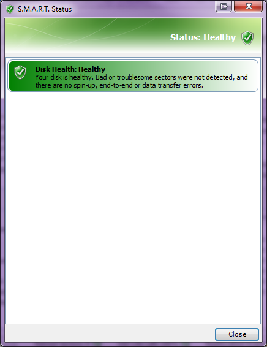
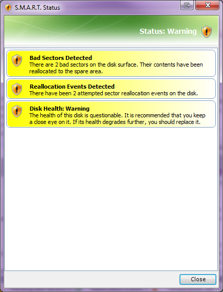
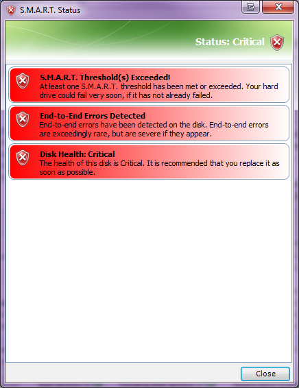
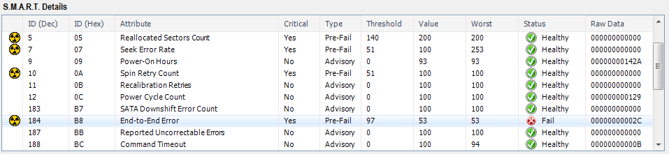

SMART Status Window
The SMART Status window provides you a concise summary of any problems detected with your disk. It may be difficult to interpret the SMART data, so the SMART Status can point out any problems that may be demanding your attention. The SMART Status window uses a combination of colors, icons and messages to convey the health of your disk to you.
If your disk is healthy, the only color of messages will be green. A green shield icon will be at the top of the window, showing a status of Healthy. The example below shows a disk that has no problems.

Unfortunately disks aren't healthy forever, and some may have more problems than others.
Minor problems are reported with yellow messages. If a disk has only minor problems, the disk's health status will show Warning, and a yellow shield icon will be displayed at the top of the window. This means the disk's health is at risk, and when a disk is in this state, the disk could very easily slip into a much more critical state with or without additional warning, or it could fail entirely. A disk that is in a Warning state should be monitored closely and replaced if additional problems are detected. Some people would much rather not even bother using a disk in this degraded condition and will replace it.
Below is an example of a disk that has developed a pair of bad sectors. Notice that there is also a pair of reallocation events, indicating that these two bad sectors were detected and reallocated at separate times. (Bad sectors can be detected and reallocated as singletons or multiples.)

Serious problems are reported with red messages. If a disk has one or more serious problems, the disk's health status will show Critical, and a red shield icon will be displayed at the top of the window. This means the disk's health is at great risk of fairly imminent failure. Unless the only reason your disk is Critical is because the temperature is extremely hot, you should replace the disk as soon as possible. If the temperature is the problem, you should take corrective action (i.e. check fans, airflow, etc.) to cool the disk off immediately.
Below is an example of a disk that is exhibiting serious problems and should be replaced as soon as possible:

The disk that produced this Critical health shows the corresponding data in the S.M.A.R.T. Details, clearly showing its problem. You can see the end-to-end errors, along with the attribute status of Fail (threshold is violated):
